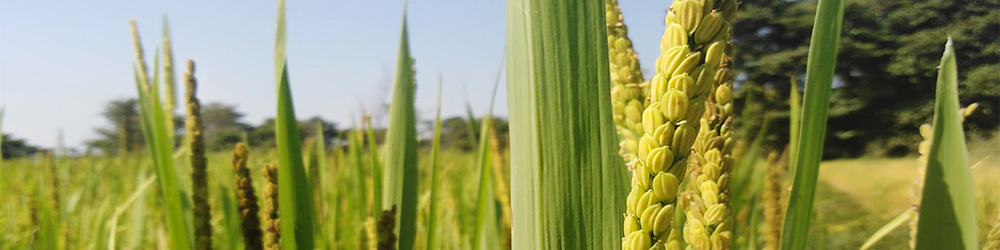
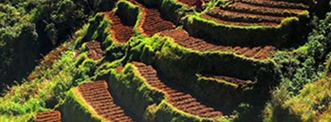
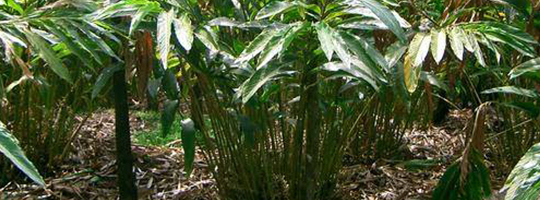
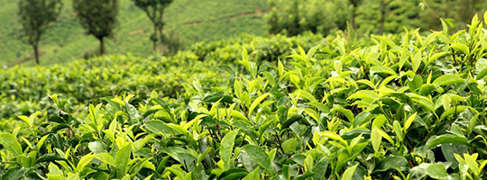
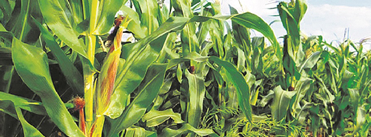
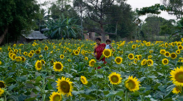
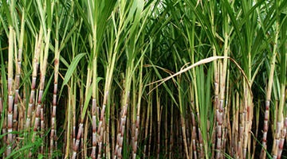
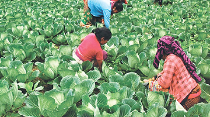

why Agriculture in Nepal?
Agriculture has been the highest priority because economic growth was dependent on both increasing the productivity of existing crops and diversifying the agricultural base for use as industrial inputs. In trying to increase agricultural production and diversify the agricultural base, the government focused on irrigation, the use of fertilizers and insecticides, the introduction of new implements and new seeds of high-yield varieties, and the provision of credit. The lack of distribution of these inputs, as well as problems in obtaining supplies, however, inhibited progress. Although land reclamation and settlement were occurring in the Terai Region, environmental degradation and ecological imbalance resulting from deforestation also prevented progress.
Although new agricultural technologies helped increase food production, there still was room for further growth. Past experience indicated bottlenecks, however, in using modern technology to achieve a healthy growth. The conflicting goals of producing cash crops both for food and for industrial inputs also were problematic.
The major economic source of the majority of the families in our country is agriculture. More than 70% of our human resources are involved in agriculture and this sector provides for nearly 40% of the gross domestic product.
Thus agriculture is the major occupation, main enterprise and the major lifestyle of the country.
The unit of the agricultural system in our country currently is a family. If we take a general representative example we see that the enterprise has familial investment, and the products of the enterprise are consumed in the family itself, and the products do not have access to the markets. Once in a while, if the production of the family exceeds the consumption it is obviously difficult for a …show more content…
Due to lack of collective agricultural systems small familial financial units are created which are incapable of competing with larger established national or international financial enterprises.
history
The production of crops fluctuated widely as a result of these factors as well as weather conditions. Although agricultural production grew at an average annual rate of 2.4 percent from 1974 to 1989, it did not keep pace with population growth, which increased at an average annual rate of 2.6 percent over the same period. Further, the annual average growth rate of food grain production was only 1.2 percent during the same period.
 Rice is the most important cereal crop. In 1966 total rice production amounted to a little more than 1 million tons; by 1989 more than 3 million tons were produced. Fluctuation in rice production was very common because of changes in rainfall; overall, however, rice production had increased following the introduction of new cultivation techniques as well as increases in cultivated land. By 1988 approximately 3.9 million hectares of land were under paddy cultivation. Many people in Nepal devote their lives to cultivating rice to survive. In 1966 approximately 500,000 tons of corn, the second major food crop, were produced. By 1989 corn production had increased to over 1 million tons.
Landscape & climate
A landscape is the visible features of an area of land, its landforms, and how they integrate with natural or man-made features.[1] A landscape includes the physical elements of geophysically defined landforms such as (ice-capped) mountains, hills, water bodies such as rivers, lakes, ponds and the sea, living elements of land cover including indigenous vegetation, human elements including different forms of land use, buildings, and structures, and transitory elements such as lighting and weather conditions. Combining both their physical origins and the cultural overlay of human presence, often created over millennia, landscapes reflect a living synthesis of people and place that is vital to local and national identity.
Climate (from Ancient Greek klima, meaning inclination) is commonly defined as the weather averaged over a long period. Climate also includes statistics other than the average, such as the magnitudes of day-to-day or year-to-year variations. Climates can be classified according to the average and the typical ranges of different variables, most commonly temperature and precipitation.The climate of a location is affected by its latitude, terrain, and altitude, as well as nearby water bodies and their currents. Nepal is topographically divided into three regions: the Himalaya to the north, the middle hills consisting of the Mahabharat range and the Churia Hills, and the Terai to the south.
HIMALAYAN REGION
Agriculture is the mainstay of Nepalese economy that provides about 38 percent share to national GDP and employing 66 percent of the total 25.3 million people. ... The Great Himalayas of Nepal deserve significant role for prospering Agriculture sector and ultimately provides strong base for whole economic system. The focus of agriculture in the Himalayan region is slowly shifting from traditional cereal crops to high-value cash crops farming such as fruits and vegetables. This transformation from subsistence systems to commercial agriculture poses new challenges for improving and maintaining productivity and quality. Among these challenges are crop failures due to inadequate pollination.
|  |  |
Terrace Farming |
Cardamom Farming |
HIllY REGION
The Hill region consists of several peaks, fertile valleys and basins. ‘Mahabharat Range’, the largest hill range passes through the region. The region accounts for 42 percent of the country’s land area. One tenth of the land area is suitable for cultivation. Around 44.3 percent of the country’s total population resides in the region (NYB, 2001). Since the region comprised of broad complex of hills and valleys, very steep slope, even up to 30 degrees, is terraced for farming
The foothills of mountains are suitable for cultivating paddy, maize, barley, buckwheat etc. In addition to this potato, cauliflower, cabbage, beans and low temperate fruits are also cultivated in the region. Paddy, wheat, maize, millet, barley, buckwheat are the major cereal crops cultivated in hills.
|  |  |
Tea Farming |
Maize Farming |
TERAI REGION
The Terai region
, a low flat land, is an extension of the Gangetic plains of India. It is a narrow tropical belt occupying 23 percent of the country’s total land area providing dwelling to 49.06 percent of the total population. About 40 percent area of the region is cultivable.In the Terai, mainly paddy, wheat, pulses, moong, sugarcane, jute, tobacco and maize are cultivated. Till now, majority of the farmers still practice traditional ways of farming. So farming is seasonal and weather dependent in Nepal.
|  |  |  |
Sunflower Framing |
Sugarcane Production |
Cauliflower Framing |